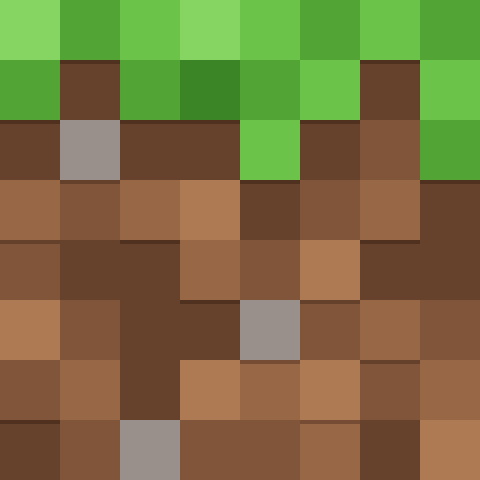

1
Choose the distractions
Pick apps, games, Microsoft Store apps and websites. Still finds what’s installed, or you can browse to any .exe. Save favourite combinations as groups.
Still puts distracting apps, games and websites on hold, so the next hour belongs to you. No accounts. No noise. Just a quieter space for your attention.
On Android? Try the early preview →
Less distraction.
More possibility.
Put distractions on hold. Make space for what matters.

An urge to scroll doesn’t have to end your session. Give yourself a little time to reconsider.
Anything that pulls you away, on hold
Choose what stays out of reach, decide how long, and start. Still takes care of the rest, even if you close the window.
Pick apps, games, Microsoft Store apps and websites. Still finds what’s installed, or you can browse to any .exe. Save favourite combinations as groups.
Anywhere from 1 minute to a full day. Add an optional pause of 1–120 minutes before you’re allowed to end early. Both are fixed once you begin.
Selected apps close and won’t launch again, not from shortcuts, launchers or the command line. Websites go on hold in Chrome and Edge.
Keep apps and websites together, search them instantly, and save a group for the way you work.
Schedule a reminder once, daily or on weekdays, and let it start a focus window with its own blocked apps.
A small beginning is all it takes.
50 min · 3 apps / websites blocked
Type / on any line to choose a checkbox, tick circle, bullet, numbered item, heading or note.
Give each website a daily allowance and a bedtime. When time is up, it rests until midnight.
See your focus time, streaks of consistency, and what you made room for, without leaderboards or guilt.
Set a waiting period before you start. To end early, you request release, wait it out, and then decide. Most urges pass long before the timer does.
Apps and websites stay blocked while you wait. You can always choose to keep going.
Demo runs 60× faster. In Still, the wait is real, and cancelling means a new full wait.
Still Guard is a small Windows service that uses AppLocker, the same application control Windows uses in offices. It doesn’t run a loop that closes apps. The apps simply won’t start.
When you reach for a blocked site in Chrome or Edge, Still shows a calm page instead. Pick one, write your own with an image, or redirect somewhere useful.
This can wait. You’ve got this.
The evening is yours to keep.
Back to the thing that matters.
A SMALL REMINDER FROM STILLYou don’t need more time. You need a little less noise.
Closing the window hides Still in the system tray. Quitting the app never stops a session in progress.
A completion notification when your time is up, and a history that grows one small commitment at a time.
Reduce motion and decorative animations with one switch. Compact layouts adapt to small windows.
Optionally opens at sign-in, so scheduled alerts are there when your day starts.
Run a newer setup and your preferences, alerts, to-dos and history carry over. Protection keeps running.
No account, no analytics. The update check only contacts GitHub when you ask it to.
Privacy & securityFree for Windows 10 (2004+) and Windows 11. Installs for just your account, with no administrator approval needed. An early Android preview is ready to try too.